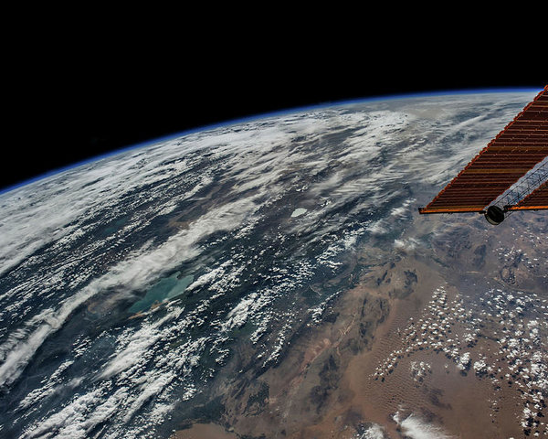

High Definition Earth-Viewing System
The High Definition Earth Viewing (HDEV) experiment aboard the ISS was activated April 30, 2014. It is mounted on the External Payload Facility of the European Space Agency’s Columbus module. This experiment includes several commercial HD video cameras aimed at the Earth which are enclosed in a pressurized and temperature controlled housing. While the experiment is operational, views will typically sequence through the different cameras. Between camera switches, a gray and then black color slate will briefly appear.
